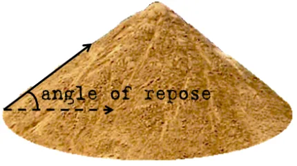
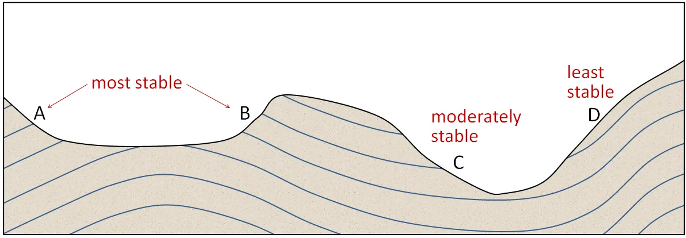
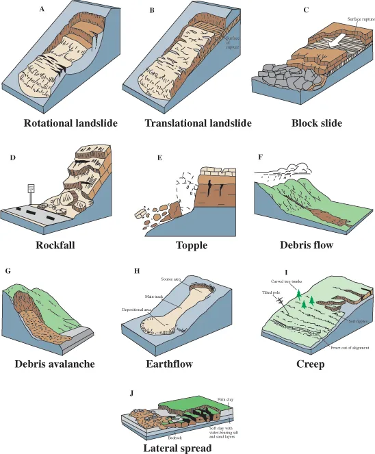
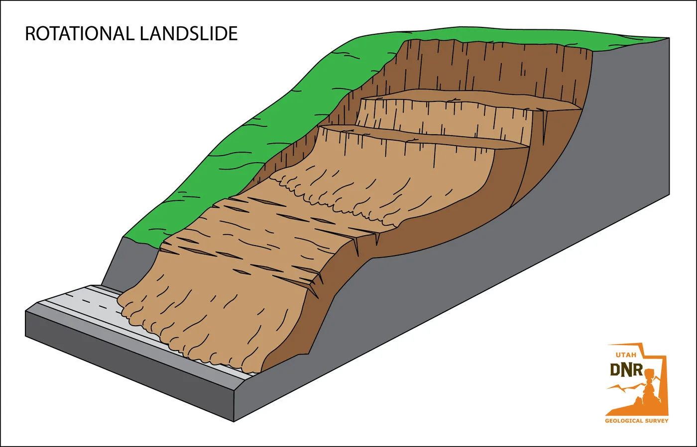
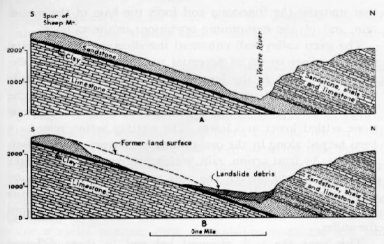
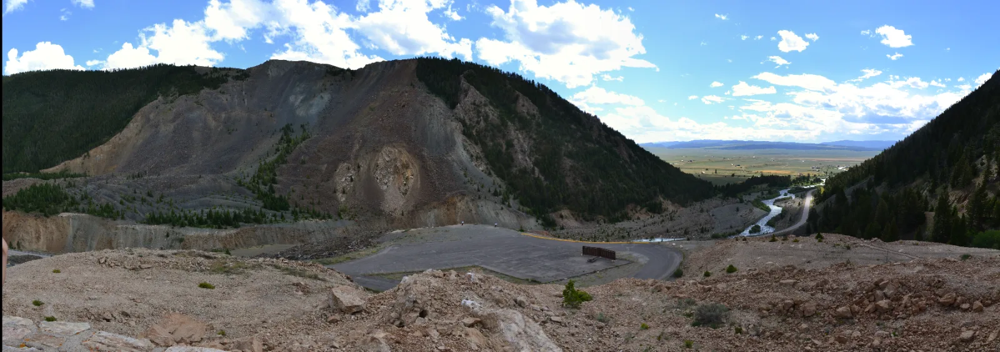
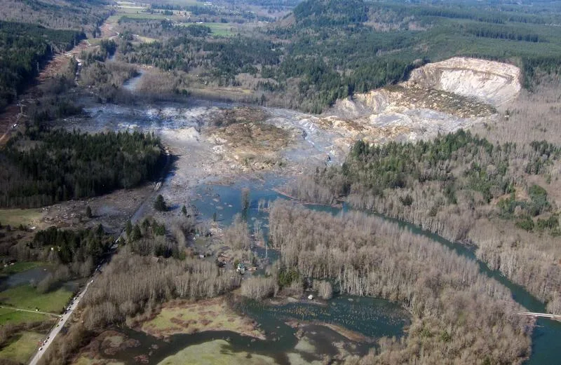
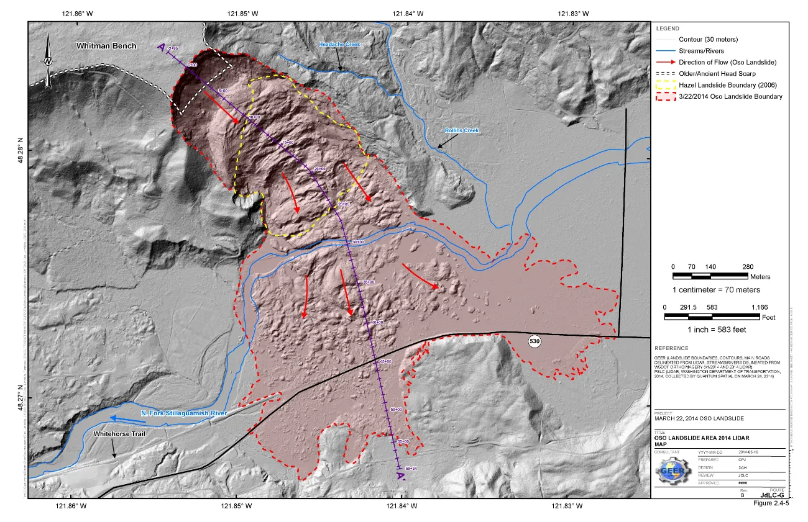
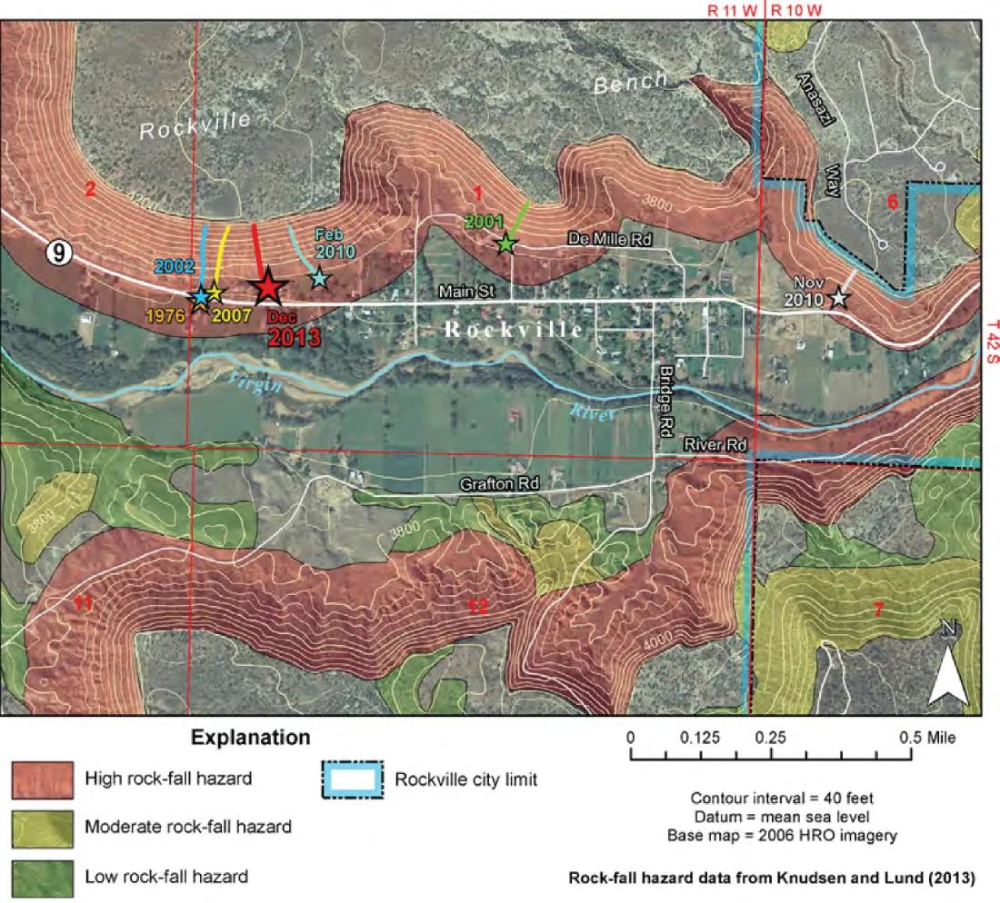
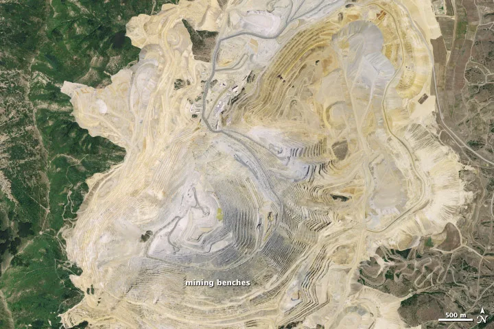

Mục tiêu học tập
Học xong Chương 10, bạn cần làm được các việc sau. Nhãn cho biết mục trình bày nội dung đó.
- 10.1Giải thích di chuyển khối trên sườn là gì và vì sao nó xảy ra trên sườn dốc.
- 10.2Giải thích các tác nhân kích hoạt cơ bản của di chuyển khối và cách chúng xảy ra.
- 10.3Nhận biết các kiểu di chuyển khối.
- 10.2.2Nhận biết các yếu tố rủi ro của di chuyển khối.
- 10.4Đánh giá các vụ sạt lở và những yếu tố góp phần gây ra chúng.
Cách dùng đề cương
Các từ gạch chân là thuật ngữ. Bấm vào một từ, hoặc mở Thuật ngữ ở góc dưới bên phải, để đọc và tìm mọi định nghĩa của chương. Cả chương xoay quanh một thế cân bằng: trọng lực kéo vật liệu xuống dốc, còn độ bền của vật liệu giữ nó tại chỗ. Bất cứ điều gì làm sườn dốc hơn hoặc làm vật liệu yếu đi đều phá vỡ thế cân bằng đó (10.1–10.2). Phần còn lại của chương gọi tên các kiểu chuyển động (10.3) và phân tích các vụ sạt lở có thật (10.4).

(EN: mass wasting) là chuyển động xuống dốc của đất đá do trọng lực. (còn gọi là trượt lở đất, EN: landslide) thường được dùng như từ đồng nghĩa, nhưng về địa chất đây là thuật ngữ chung cho di chuyển khối của vật liệu chuyển động nhanh; còn di chuyển khối bao gồm mọi chuyển động xuống dốc, dù chậm hay nhanh. Thứ thường dịch chuyển là vật liệu bở rời cùng lớp đất phía trên (). Các khối đá gốc chuyển động được gọi là đá đổ nghiêng (topple), trượt đá hoặc đá rơi, tùy chuyển động chính; chuyển động của vật liệu chủ yếu ở dạng lỏng được gọi là dòng (flow). Chuyển động nhanh, như lũ bùn đá, rất nguy hiểm. Những vùng địa hình dốc và mưa lớn như bờ biển California, vùng núi Rocky và Tây Bắc Thái Bình Dương đặc biệt dễ xảy ra di chuyển khối nguy hiểm.
10.1Độ bền sườn dốc
Di chuyển khối xảy ra khi sườn dốc bị phá hủy: nó quá dốc và kém ổn định so với vật liệu và điều kiện hiện có. rốt cuộc do hai yếu tố quyết định: góc dốc và độ bền của vật liệu bên dưới. Trọng lực gần như không đổi ở bề mặt Trái Đất (chỉ thay đổi chút ít theo độ cao và mật độ đá bên dưới).
10.1.1 Các lực trên sườn
Một khối đá trên sườn bị (fg) kéo về phía tâm Trái Đất. Lực này tách thành hai thành phần (Hình 10.2):
- (fs), lực gây trượt, đẩy khối xuống dốc.
- (fn) ép khối vào sườn. Tự nó không giữ khối lại, nhưng nó tạo ra ma sát, tức lực kháng trượt, có độ lớn tỉ lệ với fn.
Khả năng chống trượt của vật liệu là (EN: shear strength): ma sát (một phần của fn) cộng lực dính kết giữa các hạt nếu có. Khi sức kháng cắt còn lớn hơn lực cắt, khối đứng yên. Nếu sườn dốc hơn hoặc vật liệu yếu đi, lực cắt thắng và khối trượt xuống. Khi sườn dốc dần, fg giữ nguyên trong khi fn giảm và fs tăng.
10.1.2 Góc nghỉ tự nhiên
Góc dốc lớn nhất mà đất đá còn ổn định, không trượt xuống, là (EN: angle of repose), đo từ phương ngang. Ở góc này lực cắt cân bằng với lực ma sát do lực pháp tuyến tạo ra; chỉ cần dốc hơn một chút là lực cắt thắng và vật liệu bắt đầu chuyển động. Góc này thay đổi theo cỡ hạt, thành phần hạt và lượng nước. Cát đổ lên mặt phẳng lăn xuống sườn đống cát cho tới khi dừng lại ở góc nghỉ; đáy và chiều cao đống cát tiếp tục tăng, nhưng góc của sườn thì giữ nguyên (Hình 10.3, Hình 10.4).

10.1.3 Nước và mặt yếu
Nước có thể làm thay đổi mạnh sức kháng cắt của sườn. Nước nằm trong các , khoảng trống giữa các hạt trong trầm tích hoặc đá. Giả sử cát khô có góc nghỉ 30°. Thêm một ít nước làm góc nghỉ tăng, có thể lên 60° hoặc thậm chí 90°, như lâu đài cát trên bãi biển. Quá nhiều nước lấp đầy lỗ rỗng lại làm giảm sức kháng cắt và góc nghỉ, và lâu đài cát sụp đổ.
trong đá trầm tích (Học phần 5) là những . Chúng nguy hiểm nhất khi song song với sườn và ít nguy hiểm nhất khi vuông góc với sườn (Hình 10.5). Khoáng vật sét dọc mặt lớp có thể hút nước và trở nên trơn; một lớp đá phiến sét bão hòa nước có thể làm giảm sức kháng cắt của cả khối đá và gây sạt lở, như ở Gros Ventre, Wyoming, năm 1925 (10.4.1).

Tự kiểm tra: Bài kiểm tra Mục 10.1 trong giáo trình (tiếng Anh) ↗
10.2Tác nhân kích hoạt và giảm thiểu di chuyển khối
10.2.1 Tác nhân kích hoạt
Một vụ di chuyển khối thường có (EN: trigger): một thay đổi khiến sạt lở xảy ra vào một thời điểm cụ thể. Các tác nhân gồm tuyết tan nhanh, mưa lớn, rung lắc động đất, phun trào núi lửa, sóng bão, xói lở nhanh do dòng chảy và hoạt động của con người như san ủi làm đường mới.
- Lượng nước trong sườn tăng là tác nhân phổ biến nhất. Nước đến từ tuyết hoặc băng tan nhanh hay một trận mưa lớn. Mưa lớn xảy ra thường hơn vào các năm , khi bờ tây Bắc Mỹ mưa nhiều hơn bình thường và sạt lở xảy ra nhiều hơn. Động đất, các vụ trượt trước đó chặn dòng suối, và các công trình cản trở (nhà cửa, đường sá, bãi đỗ xe) cũng có thể đưa thêm nước vào sườn. Ở Madison Canyon, Montana, năm 1959, rung lắc động đất có thể đã làm sườn yếu đi.
- (EN: oversteepened slope). Xói mòn có thể làm sườn dốc hơn một cách tự nhiên: suối lũ và sóng bão khoét vào chân sườn, và việc sông khoét chân sườn được cho là một phần nguyên nhân ở Gros Ventre năm 1925. Con người làm sườn dốc hơn khi cắt vào chân sườn để làm đường hoặc san nền rồi đổ đất đào lên đỉnh sườn (Hình 10.6). Làm cẩn thận thì cách này hữu ích cho phát triển đất đai; làm ẩu thì hậu quả có thể rất nặng nề. Ở North Salt Lake, Utah, một mỏ sỏi cũ được san lại để làm đường và lô đất xây dựng có thể đã bị làm dốc quá mức, và năm 2014 một vụ trượt chậm đã phá hủy một ngôi nhà ở chân sườn.
10.2.2 Giảm thiểu
Vì nước là tác nhân chính, phần lớn biện pháp giảm thiểu sạt lở là chuyển hướng và tiêu thoát nước khỏi vùng trượt. Bạt và tấm nhựa giúp nước chảy khỏi thân khối trượt và ngăn ; rãnh và ống thoát nước làm khô khối trượt; giếng nông dùng để theo dõi lượng nước trong một số khối trượt đang hoạt động. Có thêm hai cách tiếp cận (Hình 10.7):
- Gia cố sườn. Các thanh bằng thép dài, khoan vào vách đá vài mét, giữ chặt các khối long rời ở vùng hay có đá rơi. (shotcrete) gia cố mặt sườn. Biện pháp (EN: buttressing) thêm tải ở chân khối trượt và bớt tải ở phần đầu. (terracing) cắt sườn thành dạng bậc; chỉ hiệu quả khi làm đúng quy mô.
- Che chắn, hứng và chuyển hướng vật liệu trượt. Hàng rào lưới co giãn hứng đá rơi để bảo vệ người đi bộ và xe cộ. Kênh dẫn, công trình chuyển hướng và (check dam) làm chậm lũ bùn đá và lái nó tránh công trình. Một số quốc lộ có đường hầm (mái che đá đổ) để vật liệu trượt đi qua phía trên mặt đường.
Quy mô là then chốt
Mọi công trình che chắn hay hứng đều phải được thiết kế với quy mô lớn hơn khối trượt; nếu không, nó có thể thất bại và gây thiệt hại thảm khốc về người và của.
Tự kiểm tra: Bài kiểm tra Mục 10.2 trong giáo trình (tiếng Anh) ↗
10.3Phân loại và nhận dạng sạt lở
Di chuyển khối được phân loại theo kiểu chuyển động và loại vật liệu (Bảng 10.1). Nhiều kiểu có chung các đặc điểm nhìn thấy trên mặt đất: (head scarp), thường có dạng lưỡi liềm trên vách đá; địa hình (hummocky) lồi lõm; đống (talus), đá vụn rơi từ trên xuống; và (toe) phủ lên mặt đất có sẵn.
10.3.1 Các kiểu di chuyển khối
| Kiểu chuyển động | Đá gốc | Các loại đất | |
|---|---|---|---|
| Chủ yếu hạt thô | Chủ yếu hạt mịn | ||
| Rơi (đổ) | Đá đổ (đá rơi) | — | — |
| Lở đá | Lở đá | — | — |
| Trượt xoay (sụt) | — | Trượt xoay mảnh vụn (sụt) | Trượt xoay đất (sụt) |
| Trượt tịnh tiến | Trượt tịnh tiến đá | Trượt tịnh tiến mảnh vụn | Trượt tịnh tiến đất |
| Dòng | — | Lũ bùn đá | Dòng đất |
| Bò đất | — | Bò đất | Bò đất |
Các kiểu phổ biến nhất là đá đổ, trượt xoay và trượt tịnh tiến, dòng, và bò đất (Hình 10.8):
- (EN: falls): đá tách đột ngột khỏi sườn dốc hoặc vách đá dọc các mặt nứt có sẵn như khe nứt hay mặt lớp. Đá rơi tự do, nảy và lăn. Trọng lực, phong hóa cơ học và nước chi phối đá đổ.
- (sụt, EN: rotational slide): thường chuyển động chậm dọc một mặt trượt cong.
- (EN: translational slide): thường chuyển động nhanh dọc một mặt phẳng yếu rõ rệt giữa vật liệu trượt và vật liệu ổn định hơn bên dưới. Theo vật liệu, trượt được chia thành trượt đá, trượt mảnh vụn hoặc trượt đất.
- Dòng (EN: flows): vật liệu bở rời trộn với nhiều nước, chuyển động nhanh và đi rất xa khỏi chân sườn. (debris flow) mang vật liệu thô; (earthflow) mang vật liệu mịn. Một số dòng lớn nhất và nhanh nhất trên đất liền là (sạt lở quãng xa); chúng vẫn chưa được hiểu rõ nhưng đi rất xa, kể cả trên những thiên thể gần như không có khí quyển như Mặt Trăng.
- (EN: creep): chuyển động xuống dốc chậm đến mức không nhận thấy của vật liệu bở rời như đất, do chu kỳ đóng băng ban đêm và tan băng ban ngày. Băng nở ra đẩy các hạt đất ra xa khỏi sườn; khi tan, trọng lực kéo chúng thẳng xuống. Kết quả là hạt dần dần trôi xuống dốc (Hình 10.9). Dấu hiệu của bò đất là thân cây cong, hàng rào hoặc tường chắn bị uốn, cột hoặc hàng rào nghiêng, và các gợn hay gờ đất nhỏ. (solifluction) là một kiểu bò đất đặc biệt: các thùy đất di chuyển chậm trên sườn thoải do đóng băng – tan băng theo mùa ở vĩ độ cao (cận Bắc Cực, Bắc Cực và Nam Cực).

10.3.2 Các bộ phận của khối trượt
Nhiều vụ sạt lở có chung các đặc điểm nhận dạng, dù có nhiều ngoại lệ. Sạt lở lấy đi vật liệu ở phía trên và bồi đắp ở phía dưới, và những công trình hay đối tượng tự nhiên vốn thẳng đứng hoặc cố định trở nên nghiêng hoặc lệch. Các bộ phận được thể hiện ở Hình 10.10 và liệt kê ở Bảng 10.2.
- Vách trượt. Giống vách đứt gãy, vách trượt là phần đất dốc lộ ra khi phần đất bên cạnh dịch đi. (main scarp) đánh dấu giới hạn trên của khối trượt; đó là phần lộ ra của mặt trượt.
- (rupture surface): ranh giới của khối chuyển động. Vật liệu bên dưới không dịch chuyển. Hai bên được giới hạn bởi (flank), và cuối cùng là chân khối trượt.
- Chân khối trượt: điểm cuối của vật liệu chuyển động, đánh dấu (runout), tức khoảng cách xa nhất. Ở trượt xoay, chân thường là một gò lớn bị xáo trộn, hình thành khi khối trượt vượt quá mặt trượt ban đầu.
- Đặc điểm bề mặt của trượt xoay và trượt tịnh tiến: (chân chạy nhanh hơn phần còn lại, kéo khối trượt tách ra), (sag pond; nước lấp chỗ trũng nơi chuyển động chặn dòng thoát), địa hình gò đống, và (pressure ridge; vật liệu bị đẩy trồi thành gờ ở rìa).

| # | Bộ phận | Mô tả |
|---|---|---|
| 1 | Đỉnh khối trượt | Phần đất đá chưa bị xáo trộn phía trên vách chính. |
| 2 | Vách chính | Vách dốc ở rìa trên (phần đầu) khối trượt, hình thành khi vật liệu dịch chuyển rời khỏi phần chưa xáo trộn; phần lộ ra của mặt trượt. |
| 3 | Sườn bên | Phần đất đá không dịch chuyển bên cạnh khối trượt; rìa trái và phải của khối chuyển động. |
| 4 | Thân khối trượt | Phần khối trượt nằm trên mặt trượt. |
| 5 | Mặt trượt | Ranh giới dưới của khối chuyển động, nằm dưới mặt đất ban đầu; mặt mà vật liệu trượt theo. |
| 6 | Khe nứt tách giãn | Khe nứt nơi phần giữa khối trượt bị kéo tách; thường ở giữa khối trượt. |
| 7 | Mặt tách | Phần mặt đất ban đầu nay bị vật liệu trượt phủ lên. |
| 8 | Phần chân | Phần khối trượt nằm trên mặt đất ban đầu (mặt tách). |
| 9 | Chân khối trượt | Đầu dưới của khối trượt, xa vách chính nhất. |
Tự kiểm tra: Bài kiểm tra Mục 10.3 trong giáo trình (tiếng Anh) ↗
10.4Các vụ sạt lở tiêu biểu
Những vụ sạt lở nổi tiếng cho thấy các yếu tố ở 10.1–10.2 kết hợp ra sao. Bảng 10.3 ở cuối mục tóm tắt chúng.
10.4.1 Sạt lở ở Hoa Kỳ
1925, Gros Ventre, Wyoming. Ngày 23/6/1925, một vụ trượt tịnh tiến đá khối lượng 38 triệu m³ (50 triệu yd³) xảy ra bên sông Gros Ventre (đọc là "grô vông") gần Jackson Hole. Các tảng đá lớn chặn sông và dâng lên sườn đối diện của thung lũng vài trăm foot theo chiều thẳng đứng. tạo nên hồ Slide; năm 1927 mực hồ dâng đủ cao làm đập mất ổn định, đập vỡ và gây lũ làm sáu người chết ở thị trấn Kelly, Wyoming, phía hạ lưu.


Ba yếu tố kết hợp: (1) mưa lớn và tuyết tan nhanh làm bão hòa cát kết Tensleep, khiến đá phiến sét của hệ tầng Amsden bên dưới mất sức kháng cắt; (2) sông cắt qua lớp cát kết, làm sườn dốc quá mức; (3) đất trên đỉnh núi bão hòa nước do thoát nước kém. Các mặt lớp giữa cát kết và đá phiến sét song song với sườn nên chỉ tạo ít ma sát khi sông khoét chân sườn. Một trận động đất có thể là tác nhân kích hoạt cuối cùng.
1959, Madison Canyon, Montana. Trận động đất Hebgen Lake độ lớn 7,5, lớn nhất trong lịch sử ghi nhận ở vùng núi Rocky, gây ra dao động lắc (seiche) phá hoại trên hồ Hebgen (Học phần 9) và một vụ chặn sông Madison, tạo nên hồ Quake. Khối lở dâng lên sườn bên kia thung lũng hàng trăm foot; những tảng đá cỡ ngôi nhà vẫn nằm trên sườn đối diện nơi chúng bắt đầu. Khối lở đạt tốc độ tới 160,9 km/h (100 dặm/giờ) và đẩy một luồng khí quét qua khu cắm trại Rock Creek. Hai mươi tám người chết, phần lớn ở khu cắm trại, và họ vẫn bị vùi lấp tại đó. Giống Gros Ventre, các mặt yếu (ở đây là mặt trong đá biến chất) song song với sườn.

1980, núi St. Helens, Washington. Ngày 18/5/1980, một trận động đất độ lớn 5,1 kích hoạt vụ sạt lở lớn nhất trong lịch sử ghi nhận: 2,8 km³ (0,67 dặm³) vật liệu. Tiếp theo sạt lở là vụ phun trào sườn của núi lửa, và sau phun trào là các dòng bùn đá núi lửa gọi là (Học phần 4).
1995 và 2005, La Conchita, California. Ngày 4/3/1995, một dòng đất chuyển động nhanh làm hư hại chín ngôi nhà ở cộng đồng ven biển này; một tuần sau, một lũ bùn đá ở cùng chỗ làm hư hại thêm năm nhà. Các khe nứt căng trên đỉnh khối trượt đã cảnh báo sớm từ mùa hè năm 1994 và rộng ra trong mùa đông mưa nhiều; tác nhân có thể là mưa lớn bất thường và mực dâng. Năm 2005, sau 15 ngày mưa gần mức kỷ lục, một lũ bùn đá nhanh làm hư hại 36 ngôi nhà và làm 10 người chết. Thảm thực vật vẫn nguyên vẹn khi trôi trên mặt dòng, cho thấy khối trượt được mang đi trên một lớp bên dưới bão hòa và hóa lỏng hơn nhiều (Hình 10.14).


La Conchita, hai sự kiện
- 1994: khe nứt căng trên đỉnh sườn; rộng dần qua mùa đông.
- Tháng 3/1995: dòng đất làm hư hại 9 nhà; một tuần sau lũ bùn đá làm hư hại thêm 5 nhà. Tác nhân: mưa đông lớn và nước dưới đất dâng.
- 2005: lũ bùn đá nhanh sau 15 ngày mưa gần kỷ lục; 36 nhà hư hại, 10 người chết.
- Bài học: cả vách nằm trong một khối trượt cổ, và sạt lở ở đây lặp lại khi trời rất ẩm ướt.
2014, Oso, Washington. Ngày 22/3/2014, khoảng 18 triệu tấn (10 triệu yd³) vật liệu di chuyển với tốc độ 64 km/h (40 dặm/giờ), đi gần 1,6 km (1 dặm) và chặn nhánh North Fork của sông Stillaguamish. Khối trượt phủ lên 40 ngôi nhà và làm 43 người chết ở cộng đồng Steelhead Haven, khối lượng tương đương 600 sân bóng bầu dục bị phủ dày 3 m (10 ft). Mùa đông 2013–2014 có lượng mưa gần gấp đôi trung bình, và thung lũng này có lịch sử nhiều vụ sạt lở, dù những vụ trước đều nhỏ.


Đá rơi ở Vườn quốc gia Yosemite. Các vách đá dốc của Yosemite thường xuyên có đá rơi. Khe nứt do ứng suất kiến tạo và , được mở rộng, có thể làm những khối granit cỡ ngôi nhà tách khỏi vách. Vườn quốc gia mô phỏng quãng đường trượt tiềm năng để đánh giá rủi ro cho hàng triệu du khách.
10.4.2 Sạt lở ở Utah
Khối trượt trọng lực Markagunt. Khoảng 21–22 triệu năm trước, một trong những vụ sạt lở trên đất liền lớn nhất từng được phát hiện trong hồ sơ địa chất đã dịch chuyển hơn 1.700 km³ (408 dặm³) vật liệu trong một sự kiện tương đối nhanh, trên diện tích cỡ bang Rhode Island, từ gần Cedar City tới Panguitch (Hình 10.18). Bằng chứng gồm và cuội kết (Học phần 5), dạng thủy tinh (Học phần 6), các mặt trượt giống đứt gãy (Học phần 9) và các thể tường. Khối trượt có lẽ là vật liệu bị giải phóng từ sườn của một (laccolith, Học phần 4) đang lớn dần, sau một trận động đất liên quan đến phun trào.

1983, Thistle. Từ tháng 4 đến tháng 5/1983, một khối trượt chậm di chuyển 305 m (1.000 ft) xuống dốc và chặn hẻm Spanish Fork bằng một đập dòng đất cao 61 m (200 ft) (Hình 10.1). Lũ ở thượng nguồn trong các thung lũng Soldier Creek và Thistle Creek nhấn chìm thị trấn Thistle. Một đường tràn ngăn hồ mới làm vỡ đập, sau đó một đường hầm tháo cạn hồ, và đến nay sông vẫn chảy qua đường hầm đó. Việc di dời tuyến đường sắt và quốc lộ US-6 tốn hơn 200 triệu USD.
2013, đá rơi ở Rockville. Tháng 12/2013, một khối cuội kết Shinarump nặng 2.700 tấn (1.400 yd³) rơi từ vách Rockville Bench gần Vườn quốc gia Zion, đáp xuống sườn dốc 35° bên dưới và vỡ thành những mảnh lớn tiếp tục lăn với tốc độ cao. Chúng phá hủy một ngôi nhà cách chân vách 375 ft và làm hai người trong nhà thiệt mạng. Các vụ đá rơi trước đó trong vùng được thể hiện ở Hình 10.20.


2014, North Salt Lake. Tháng 8/2014, sau một thời kỳ đặc biệt ẩm ướt, một khối trượt xoay chậm phá hủy một ngôi nhà và làm hư hại các sân tennis gần đó (Hình 10.21). Cư dân đã thấy khe nứt gần đỉnh sườn ít nhất một năm trước đó. Lớp cát và sỏi dễ thoát nước nằm trên lớp sét kém thấm (phong hóa từ tro núi lửa), cộng với việc san lại sườn gần đây, có thể đã góp phần; mưa lớn cục bộ dường như là tác nhân kích hoạt. Sườn được san lại một phần, nhưng tháng 1/2017 nhiều phần lại chuyển động. Ở khu gần đó, cư dân báo nhà bị hư hại từ năm 1996 đến 2012, khi 18 ngôi nhà không thể ở được nữa và bị dỡ bỏ; khu đất trống nay là một công viên địa chất.

2013, mỏ đồng Bingham Canyon. Lúc 21:30 ngày 10/4/2013, hơn 65 triệu m³ vách mỏ dốc dạng bậc trượt vào moong khai thác của Bingham Canyon, một trong những vụ sạt lở lịch sử lớn nhất không liên quan đến núi lửa. Hệ thống radar của đơn vị vận hành mỏ đã cảnh báo vách đang dịch chuyển, nên không ai thiệt mạng và thiệt hại tài sản được hạn chế (Hình 10.22, Hình 10.23).


| Sự kiện | Kiểu | Nguyên nhân và tác nhân | Hậu quả |
|---|---|---|---|
| Gros Ventre, WY, 1925 | Trượt tịnh tiến đá | Đá phiến sét bão hòa dưới cát kết; mặt lớp song song sườn; sông khoét chân; có thể có động đất | Chặn sông; đập vỡ năm 1927, lũ làm 6 người chết |
| Madison Canyon, MT, 1959 | Lở đá | Động đất M7,5; mặt phân phiến song song sườn | 28 người chết; hình thành hồ Quake |
| Núi St. Helens, WA, 1980 | Sạt lở, rồi phun trào và lahar | Động đất M5,1 | Sạt lở lớn nhất lịch sử ghi nhận, 2,8 km³ |
| La Conchita, CA, 1995 và 2005 | Dòng đất, lũ bùn đá | Mưa lớn, nước dưới đất dâng | 2005: 36 nhà hư hại, 10 người chết |
| Oso, WA, 2014 | Sạt lở (mảnh vụn) | Mùa đông mưa gần gấp đôi trung bình; thung lũng hay sạt lở | 43 người chết, 40 nhà bị phủ; sông bị chặn |
| Yosemite, CA | Đá rơi | Khe nứt kiến tạo và bóc vỏ, được nêm băng mở rộng | Rủi ro thường trực cho du khách; mô phỏng quãng đường trượt |
| Markagunt, UT, 21–22 triệu năm trước | Trượt trọng lực | Sườn thể nấm đang lớn; động đất liên quan phun trào | Hơn 1.700 km³ dịch chuyển |
| Thistle, UT, 1983 | Dòng đất chậm | (Chương không nêu) | Chặn sông, ngập thị trấn; hơn 200 triệu USD |
| Rockville, UT, 2013 | Đá rơi | Khối cuội kết rơi từ vách | Phá hủy nhà, 2 người chết |
| North Salt Lake, UT, 2014 | Trượt xoay chậm | Cát sỏi trên sét; san lại sườn; mưa lớn | 1 nhà bị phá hủy; tái hoạt động 2017 |
| Bingham Canyon, UT, 2013 | Trượt vách mỏ | Vách moong dốc dạng bậc | Hơn 65 triệu m³; không ai chết nhờ cảnh báo radar |
Tự kiểm tra: Bài kiểm tra Mục 10.4 trong giáo trình (tiếng Anh) ↗
Tóm tắt
Di chuyển khối trên sườn là mọi chuyển động xuống dốc của đất đá do trọng lực. Nó xảy ra khi sườn quá dốc để giữ ổn định với vật liệu và điều kiện hiện có; thứ thường dịch chuyển là đất đá bở rời (lớp phủ phong hóa). Độ ổn định sườn phụ thuộc vào góc dốc và sức kháng cắt của vật liệu. Các vụ di chuyển khối được kích hoạt bởi những thay đổi làm sườn dốc quá mức hoặc yếu đi: tuyết tan nhanh, mưa lớn, rung lắc động đất, phun trào, sóng bão, xói lở do dòng chảy và hoạt động của con người. Nước dư thừa là tác nhân phổ biến nhất. Chúng được phân loại theo chuyển động và vật liệu và có chung các đặc điểm bề mặt; phổ biến nhất là đá đổ, trượt, dòng và bò đất. Tốc độ dao động từ chậm đến nhanh nguy hiểm. Nghiên cứu các vụ trong quá khứ giúp dự báo sạt lở sẽ xảy ra ở đâu, như thế nào và cách bảo vệ con người.
Ôn nhanh
- fg không đổi; sườn dốc hơn làm tăng fs (gây trượt) và giảm fn, nên ma sát (lực kháng trượt, tỉ lệ với fn) cũng giảm.
- Góc nghỉ tự nhiên = góc dốc lớn nhất còn ổn định; phụ thuộc cỡ hạt, thành phần và nước.
- Một ít nước làm cát bền hơn (lâu đài cát); quá nhiều nước làm cát yếu đi.
- Mặt lớp hay mặt phân phiến song song với sườn = kém ổn định (Gros Ventre, Madison Canyon).
- Tác nhân: nước (phổ biến nhất), làm dốc quá mức, rung lắc. Giảm thiểu: thoát nước, gia cố, hoặc che chắn, hứng và chuyển hướng.
- Đá đổ (rơi tự do) · trượt xoay (mặt cong) · trượt tịnh tiến (mặt phẳng) · dòng (nhiều nước) · bò đất (đóng băng – tan băng, rất chậm).
- Cấu tạo khối trượt: đỉnh → vách chính → thân khối trượt trên mặt trượt → phần chân → chân khối trượt; hai bên là sườn bên.
Tự kiểm tra: Bài ôn tập Chương 10 trong giáo trình (tiếng Anh) ↗
Tài liệu tham khảo
Ghi chú kiểm chứng
Mọi dữ kiện trong đề cương lấy từ Chương 10. Các ghi chú này nêu những chỗ chương đơn giản hóa, in nhầm hoặc khác với các nguồn đáng tin cậy khác. Phần nội dung chính giữ số liệu của chương.
| Chương viết | Kiểm chứng |
|---|---|
| Giáo trình viết rằng lực pháp tuyến (ma sát) chống lại lực cắt, và ở góc nghỉ tự nhiên lực cắt bằng lực pháp tuyến. | Đã sửa trong đề cương này. Lực kháng trượt là ma sát, tỉ lệ với lực pháp tuyến nhưng không phải chính lực pháp tuyến (bằng một phần của fn, cộng lực dính nếu có), nên vật liệu trượt khi fs vượt sức kháng đó chứ không phải vượt chính fn. Vì vậy góc nghỉ của cát khô thường khoảng 30–35° chứ không phải 45° là góc mà fs = fn (Steven Earle, Physical Geology, BCcampus, CC BY). Thanh trượt ở Hình 10.2 chỉ thể hiện hai thành phần lực. |
| "Shockcrete" | In nhầm: vật liệu đúng là shotcrete (bê tông phun). |
| Bò đất do đóng băng ban đêm và tan băng ban ngày. | Đó là một nguyên nhân. Các tài liệu khác bổ sung chu kỳ ướt – khô và nóng – lạnh, cũng làm đất nở và co (USGS Landslide Handbook, 2008). |
| Động đất Hebgen Lake năm 1959 độ lớn 7,5; 28 người chết. | USGS ghi M7,3 (trang sự kiện hiện ghi 7,2); Đại học Utah ghi 7,5. Con số 28 người chết là tổng số của trận động đất; phần lớn chết trong vụ trượt Madison. |
| Sạt lở núi St. Helens 2,8 km³ (0,67 dặm³). | USGS thường ghi khoảng 2,5 km³ (0,6 dặm³) cho khối lở mảnh vụn năm 1980. Cả hai đều xác nhận đây là sạt lở lớn nhất lịch sử ghi nhận. |
| Vụ Oso "extended for nearly a 1.6 km (1 m)". | In nhầm: 1 dặm (mile). USGS ghi khối lượng khoảng 8 triệu m³ (khoảng 10 triệu yd³), khớp với chương. |
| Bingham Canyon, hơn 65 triệu m³. | Khớp với báo cáo của Sở Khảo sát Địa chất Utah và NASA Earth Observatory (khoảng 165 triệu tấn). Trong hình so sánh của giáo trình, ảnh "sau" đề ngày 2/5/2013, sau vụ trượt ngày 10/4. |
| Phương án "Transitional slide" trong bài kiểm tra Mục 10.3. | In nhầm, đúng là translational slide (trượt tịnh tiến). |
| Pseudotachylit, lidar, đập chắn bùn đá, đập chắn do sạt lở. | Chương không định nghĩa; bảng thuật ngữ định nghĩa theo USGS Landslide Handbook và tài liệu địa chất phổ thông. |
| Thuật ngữ tiếng Việt. | Đã đối chiếu với tên bài trên vi.wikipedia: sạt lở đất (landslide; tài liệu địa chất cũng dùng "trượt lở đất"), lực pháp tuyến, nước dưới đất, dòng chảy mặt, sườn tích (talus/scree), dăm kết, phân phiến, dao động lắc, lidar. Các thuật ngữ còn lại theo cách dùng phổ biến trong địa chất công trình Việt Nam và các học phần trước (lỗ rỗng, mặt lớp, phong hóa bóc vỏ, nêm băng, thể nấm, pseudotachylit); chưa thấy trong nguồn chính thức: di chuyển khối trên sườn (mass wasting), góc nghỉ tự nhiên, sức kháng cắt, lực cắt, bê tông phun, neo đá, phản áp, lũ bùn đá, dòng đất, bò đất, trượt xoay, trượt tịnh tiến, lở đá, các bộ phận khối trượt. |
Nguồn & trích dẫn
Nội dung tóm tắt từ An Introduction to Geology, Chương 10, © 2017 Chris Johnson, Matthew D. Affolter, Paul Inkenbrandt và Cam Mosher, giấy phép CC BY-NC-SA 4.0. Mọi ảnh và hình vẽ lấy từ chương đều ghi nguồn trong chú thích, với giấy phép theo mục ghi công hình ảnh của chương.
- Vẽ cho đề cương theo mô tả trong chương: các lực trên sườn (Hình 10.2, theo hình của Paul Inkenbrandt), đống cát lớn dần (Hình 10.4), làm dốc quá mức do san lấp (Hình 10.6), các biện pháp giảm thiểu (Hình 10.7) và bò đất (Hình 10.9). Các số trên Hình 10.10 dựng lại hình tương tác của giáo trình; thanh so sánh trước–sau của giáo trình được trình bày thành Hình 10.22 và Hình 10.23 vì hai ảnh NASA chụp hai vùng khác nhau.
- Nguồn bên ngoài được nêu tại chỗ sử dụng: USGS (Landslide Handbook; các trang về Hebgen Lake, núi St. Helens và Oso), Sở Khảo sát Địa chất Utah, NASA Earth Observatory và Steven Earle, Physical Geology (BCcampus, CC BY).